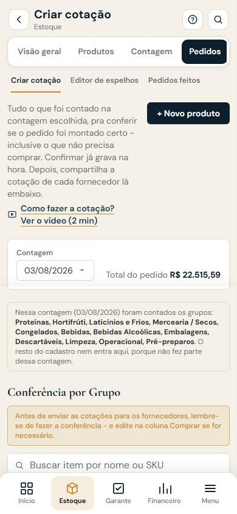

Cotação de compras: como escolher o fornecedor sem olhar só o preço
O pedido da semana começa na contagem, passa pela cotação e só termina quando a mercadoria é conferida na porta. O passo a passo para hamburgueria e pizzaria, com qualquer ferramenta.
Publicado em 16/11/2026
Em muito restaurante pequeno, a compra funciona assim: o representante passa, o dono pergunta o preço, acha razoável e fecha. Às vezes compara com outro fornecedor de cabeça. Raramente no mesmo dia, com o mesmo item e a mesma quantidade.
A cartilha de CMV da Abrasel põe as compras sem planejamento entre os maiores vilões do custo da comida. Um dos sinais listados é quando o fornecedor dita o volume, e não a necessidade real. A cotação é o passo que devolve essa decisão ao dono.

Esta matéria trata da escolha do fornecedor e do pedido. Quanto pedir de cada item, com ponto de reposição e estoque mínimo, está em Quanto comprar de cada insumo.
O que é cotação de compras no restaurante?
É pedir o preço do mesmo item a mais de um fornecedor, nas mesmas condições, para decidir de quem comprar. No capítulo Estrutura, o livro Restaurante no Controle liga a compra à ficha técnica.
"A ficha técnica bem elaborada informa exatamente quanto de cada ingrediente é necessário, promovendo um planejamento de compras mais eficiente."Vinícius Zanetti, no capítulo Estrutura do livro Restaurante no Controle
A ordem importa. Primeiro o restaurante sabe quanto precisa, pela contagem e pelo consumo. Depois pergunta o preço. Quem inverte a ordem compra o que está em promoção, e não o que falta.
Como fazer cotação de preços com fornecedores?
- Parta da contagem. A lista de cotação é o que falta para completar o estoque da semana. Item que não falta não entra.
- Descreva o item igual para todos. Marca, gramatura, corte, embalagem. "Muçarela" não basta: diga se é em peça ou fatiada, o peso e as marcas aceitas.
- Compare na mesma unidade. Um fornecedor cota a caixa, outro o quilo, outro o pacote. Converta tudo para a unidade da ficha técnica antes de comparar.
- Anote prazo de entrega e de pagamento. Um preço menor com entrega em três dias sai caro se o estoque mínimo do item não aguenta a espera.
- Feche um pedido por fornecedor. Escolhido o vencedor de cada item, junte os itens de cada fornecedor num pedido só, com quantidade e preço combinados por escrito.
O Sebrae do Paraná sugere manter um catálogo de fornecedores com contatos, tabelas de preço e histórico dos pedidos, e registrar também as experiências ruins. É o que permite cotar rápido na semana seguinte sem recomeçar do zero.
O fornecedor mais barato é sempre a melhor escolha?
Não. O preço da nota é só uma parte do custo. A tabela mostra o que entra na comparação.
| O que comparar | Por que pesa |
|---|---|
| Preço na unidade da ficha | É o número que vai para o custo do lanche |
| Rendimento | Carne com mais gordura ou verdura com mais folha ruim rende menos (fator de correção) |
| Prazo de entrega | Define se o item aguenta até a entrega ou vira compra de emergência |
| Prazo de pagamento | Mexe no caixa da semana |
| Histórico | Entrega fora do combinado, troca de marca sem aviso, falta frequente |
A Abrasel lista o efeito da compra sem planejamento: excesso de estoque, perda por validade, capital parado e compras emergenciais, mais caras. Um fornecedor um pouco mais caro que entrega no prazo pode custar menos no mês do que o mais barato que falha.
Quantos fornecedores cotar?
Não existe número fixo. O que pesa é ter alternativa nos itens que mais pesam no CMV, como carne, queijo e bacon numa hamburgueria, ou muçarela e farinha numa pizzaria. Com um fornecedor só, o restaurante não tem com quem comparar e fica sem saída quando ele falha. Nos itens pequenos, cotar toda semana pode custar mais tempo do que economiza.
O livro põe a revisão das condições comerciais com fornecedores entre as rotinas mensais, no capítulo Garante. Uma vez por mês, o dono confere se o preço combinado continua valendo e se vale abrir nova cotação.
Como conferir a mercadoria no recebimento?
A compra só termina quando a mercadoria é conferida. Quem recebe compara o que chegou com o pedido: quantidade, peso, marca, validade e preço da nota. O que veio a menos é anotado na hora, antes de o entregador ir embora.
A quantidade recebida, e não a pedida, é a que entra nas compras do CMV. E quando o preço muda, a ficha técnica precisa mudar junto. A Abrasel trata isso como um dos vilões do CMV: ficha técnica desatualizada cria a falsa sensação de lucro. A matéria Ficha técnica e preço por canal mostra como manter a ficha em dia.
"Uma ficha técnica que o cozinheiro desconhece não protege a margem."Vinícius Zanetti, no capítulo Garante do livro Restaurante no Controle
Como o Zatti Hub faz isso
No Zatti Hub, app de gestão da Zatti, a cotação nasce da contagem de estoque. Pela ficha de funções do app, conferida em 16 de novembro, o trabalho se divide assim:
| O dono faz | O app calcula |
|---|---|
| Cadastra cada produto com até 4 fornecedores, unidade, preço e necessário da semana | Sugestão de compra: necessário da semana menos o estoque contado |
| Cria a cotação a partir da contagem e ajusta as quantidades | Agrupa os itens por fornecedor |
| Confirma o fornecedor vencedor de cada item no editor de espelhos e compartilha o pedido de cada fornecedor como imagem | Total de cada pedido |
| Marca o pedido como recebido, com a quantidade que chegou | O pedido recebido entra nas compras do CMV Real |
O necessário da semana segue a lógica do ponto de reposição explicada em Quanto comprar de cada insumo: a compra completa o que falta até ele. A tela de criar cotação mostra a contagem escolhida, o total do pedido e uma conferência por grupo de itens antes de compartilhar.
O que o app não faz
- Não envia o pedido sozinho ao fornecedor. A imagem do pedido é compartilhada por quem usa o app.
- Não dá entrada no estoque pela nota fiscal. O recebimento é marcado no app, com a quantidade recebida.
- Não decide o fornecedor: quem confirma o vencedor de cada item é o dono ou quem faz a cotação.
- Não se integra a PDV, iFood ou banco.
O app tira a cotação do caderno e liga o pedido ao CMV. Negociar, escolher e conferir a mercadoria continua sendo trabalho do restaurante.
Perguntas frequentes
Como fazer cotação de preços para restaurante?
Parta da contagem, descreva o item igual para todos os fornecedores, compare na mesma unidade da ficha técnica, anote prazo de entrega e de pagamento e feche um pedido por fornecedor.
O fornecedor mais barato é sempre o melhor?
Não. Rendimento, prazo de entrega, prazo de pagamento e histórico de entregas também pesam. Uma falha de entrega vira compra de emergência, que costuma sair mais cara.
Quantos fornecedores devo cotar?
Não há número fixo. O importante é ter alternativa nos itens que mais pesam no CMV, como carne e queijo, e revisar as condições com os fornecedores uma vez por mês.
O Zatti Hub envia o pedido ao fornecedor?
Não. O app agrupa os itens por fornecedor e gera o pedido de cada um como imagem, que é compartilhada por quem usa o app. Também não dá entrada no estoque pela nota fiscal.
Fontes
- Abrasel: Cartilha Custo de Mercadoria Vendida (CMV) para bares e restaurantes (janeiro de 2026), consultada em 16/11/2026.
- Sebrae/PR: Faça um catálogo de fornecedores para facilitar suas compras (07/09/2022).
- Vinícius Zanetti, Restaurante no Controle: capítulos Estrutura (padronização de compras) e Garante (rotinas mensais).
- Zatti Consultoria: página do Zatti Hub e ficha interna de funções do app, conferida no perfil de teste em 16/11/2026.